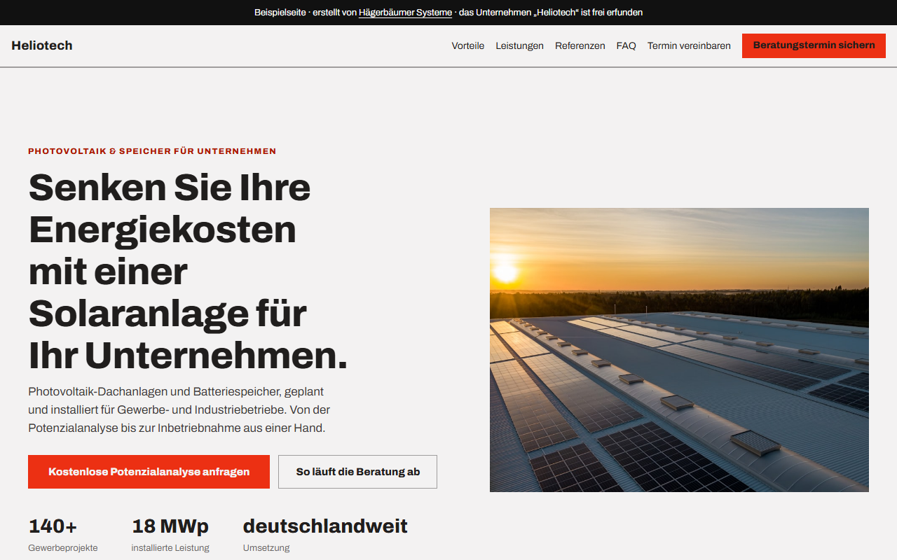
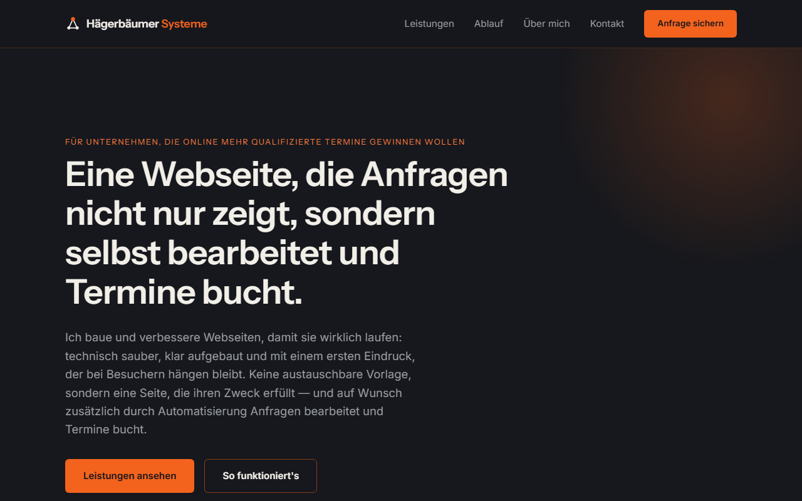

Für Unternehmen, die Routineaufgaben endlich automatisieren wollen
Hägerbäumer
Systeme
Was ist das eigentlich?
KI-Automatisierung — einfach erklärt
Wiederkehrende Aufgaben in Ihrem Unternehmen — E-Mails beantworten, Daten übertragen, Anfragen sortieren — laufen künftig automatisch. Kein zusätzlicher Mitarbeiter, keine manuelle Arbeit.
Klicken für mehr über mich →
Leistungen
Was ich für Sie umsetze
Individuelle KI-Automatisierungen, die genau auf Ihre Abläufe zugeschnitten sind — kein Einheitsbaukasten, sondern eine Lösung, die wirklich zu Ihrem Unternehmen passt.
-
Automatisierte Workflows
Wiederkehrende Abläufe wie Anfragen bearbeiten, Daten übertragen oder Benachrichtigungen versenden laufen künftig automatisch — zuverlässig, rund um die Uhr, ohne manuelle Eingriffe.
-
KI-Wissensbanken
Ihr Unternehmenswissen — Handbücher, Richtlinien, Prozesse — wird für KI nutzbar gemacht. Mitarbeiter oder ein KI-Assistent finden die richtige Antwort in Sekunden statt Minuten.
-
KI-gestützte Kommunikation
E-Mails kategorisieren, Anfragen vorqualifizieren, Standardantworten automatisch formulieren — Ihr Team bearbeitet nur noch die Fälle, die wirklich eine menschliche Entscheidung brauchen.
Vertrauen
So arbeite ich
Ein transparenter Prozess, bei dem Sie die ganze Zeit direkt mit mir sprechen — kein Callcenter, keine Weiterleitung.
-
Direkter Ansprechpartner
Sie sprechen während des gesamten Projekts direkt mit mir — keine wechselnden Zuständigkeiten, keine Blackbox.
-
Läuft bei Ihnen, nicht bei mir
Die Automatisierung wird in Ihrer eigenen Umgebung betrieben — Ihre Daten bleiben bei Ihnen, keine Abhängigkeit von meinem Server.
-
DSGVO-konforme Umsetzung
Alle Lösungen werden datenschutzkonform umgesetzt — ohne nachträgliche Überraschungen oder Compliance-Probleme.
Ablauf
So beginnt die Zusammenarbeit
Vier Schritte von der ersten Analyse bis zur laufenden Automatisierung — kein Papierkram, keine Blackbox.
Analyse
Ich schaue mir Ihre aktuellen Abläufe an und identifiziere, welche Aufgaben sich am sinnvollsten automatisieren lassen und welchen Zeitgewinn das bringt.
Konzept
Ich zeige Ihnen konkret, wie die Automatisierung aussehen wird, welche Tools genutzt werden und was danach noch manuell bleibt.
Umsetzung
Ich baue die Automatisierung, teste sie und richte sie in Ihrer Umgebung ein — inklusive Einweisung, damit Ihr Team sie selbst bedienen kann.
Betrieb
Die Automatisierung läuft stabil in Ihrem Unternehmen. Ich bleibe als Ansprechpartner erreichbar, falls Anpassungen nötig werden.
Projekte
Eigene Demoprojekte
Noch keine Kundenreferenzen — aber zwei funktionierende Demos, die zeigen, was ich umsetzen kann. Beide laufen echt, kein Mock.

KI-Wissensbank
Ausgangslage: Ein Unternehmen hat Handbücher und Richtlinien als PDF — Mitarbeiter suchen ewig nach der richtigen Antwort.
Umsetzung: Dokumente werden automatisch verarbeitet und in eine KI-Wissensbank geladen. Mitarbeiter fragen per Chat — die KI antwortet direkt mit Quellenangabe.
Ergebnis: Antworten in Sekunden statt Minuten, vollständig in der eigenen Unternehmensumgebung.

Automatisierter Anfragen-Workflow
Ausgangslage: Eingehende Anfragen werden manuell gelesen, bewertet und weitergeleitet — zeitaufwändig und fehleranfällig.
Umsetzung: KI liest jede Anfrage, bewertet Dringlichkeit und Thema, leitet automatisch an die richtige Person weiter und bestätigt dem Absender den Eingang.
Ergebnis: Kein manuelles Sortieren mehr, keine verlorenen Anfragen.
Erfahrungen
Was Kunden nach der Zusammenarbeit sagen
Schon mit mir zusammengearbeitet? Teilen Sie Ihre Erfahrung.